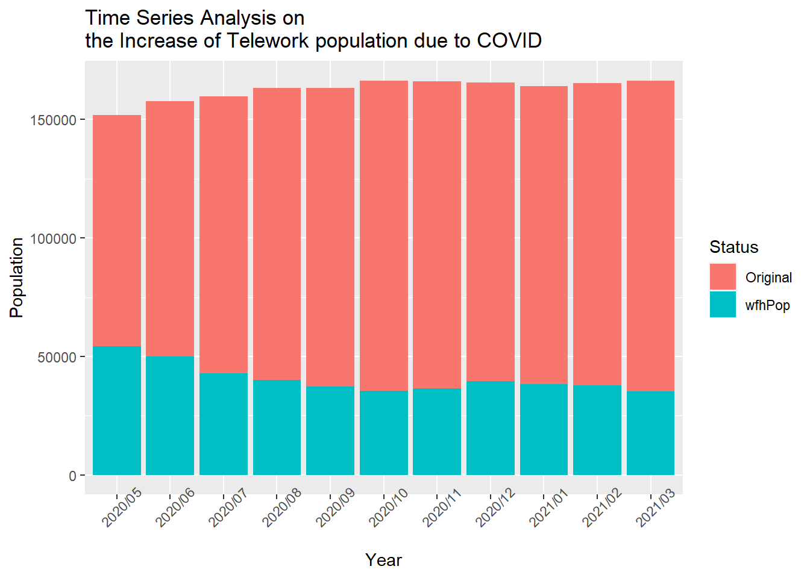

Chapter 5 Results
# using stacked bar plot to show the numbers of WFH people in each sector
before <- before[,-c(3,4)]
num_bef <- before%>%gather("Sector","Population",-c(Year,WFH_only))
wfh <- num_bef%>%filter(WFH_only==T)%>%select(Year,Sector,Population)
wfh$Year<- lubridate::ymd(wfh$Year, truncated = 2L)
ggplot(data = wfh,aes(x = Year,y = Population,fill = Sector))+
geom_bar(stat = "identity")+
scale_fill_brewer(palette="Set4")+
ggtitle("Time Series Analysis on Telework Population for different Sectors")
Overall, the general population of telework employees tend to increase over the last 10 years. Among all the sectors being investigated, Service and Management,Business and Financial Sector seemed contribute to the increase in work-from-home employees’ population the most.
#create line plots representing the change in WFH employees over total employed percentages before COVID
#calculate percentage table
totals <- seq(1,21,2)
wfh <- totals+1
before_perc <- before[wfh,]/before[totals,]
before_perc <- before_perc[,-ncol(before)]
before_perc$Year <- before$Year[totals]
#calculate percentage change
prev <- seq(1:10)
later <- prev+1
perc_change <- (before_perc[later,]-before_perc[prev,])/before_perc[prev,]
row.names(perc_change) <- before$Year[seq(3,22,2)]
perc_change <- perc_change[,-1]
new_perc_change <- gather(perc_change, columnNames, change)
colnames(new_perc_change)[1]<-"Sector"
Year <- rep(seq(2010,2019,1),8)
new_perc_change <- data.frame(new_perc_change,Year = lubridate::ymd(Year, truncated = 2L))
#construct plot
ggplot(new_perc_change,aes(x = Year,y = change))+
geom_point(size=1, color="#69b3a2") +
geom_line(color="#69b3a2")+
geom_hline(yintercept=0,alpha = 0.3,color = "#69b3a2")+
ggtitle('Time Series Analysis on the Growth Rate of \nWFH population in each sector before COVID \nper Year') +
xlab("Year") +
ylab("Growth Rate") +
geom_area(fill = "#69b3a2",alpha = 0.4)+
facet_wrap(~Sector)+
theme(plot.title = element_text(size = 20, face = "bold"))The plot above shows the fluctuation of growth rate with WFH population within selected Sectors over years. We can see that some Sectors, such as Construction, Production, Office and Administration, Services and Transportation seem to have high volatility in the changes of WFH population percentages, with fluctuation ranging between -0.5% to 1%. Management, Business, Financial and Professional Sectors seem to have less fluctuation in the change of rate.
#change of WFH workers proportion over years
num_bef <- before%>%gather("Sector","Population",-c(Year,WFH_only))%>%group_by(Year,WFH_only)%>%summarise(Population = sum(Population))
totalemp_bef<-num_bef%>%filter(WFH_only==F)%>%select(Year,totalPop = Population)
wfh_bef<-num_bef%>%filter(WFH_only==T)%>%select(wfhPop = Population)
rate_bef <- data.frame(totalemp_bef$Year,perc = wfh_bef$wfhPop/totalemp_bef$totalPop)
num_aft <- after%>%gather("Sector","Population",-c(Year,WFH_only))%>%group_by(Year,WFH_only)%>%summarise(Population = sum(Population))
totalemp_aft<-num_aft%>%filter(WFH_only==F)%>%select(Time = Year,totalPop = Population)
wfh_aft<-num_aft%>%filter(WFH_only==T)%>%select(wfhPop = Population)
wfh_aft$Original <- totalemp_aft$totalPop-wfh_aft$wfhPop
wfh_aft<-wfh_aft%>%gather("Status","Population",-Year)
#stack bar plot for increase of wfh population due to covid
ggplot(data = wfh_aft,aes(x = Year,y = Population,fill = Status))+
geom_bar(stat = "identity")+
ggtitle("Time Series Analysis on \nthe Increase of Telework population due to COVID")
In general, we can see that the increase of telework population due to covid has a greater portion among the number of all employed workers starting from May 2020 and its proportion started to decrease as time pass by. Even though we could not get the data before May 2020, this trend may suggest that at the beginning of 2020, when COVID had just begun, the ratio of covid-lead WFH population over the total employed population would be even higher. Another trend we can see from the graph is that the total employed workers’ number is gradually increasing.